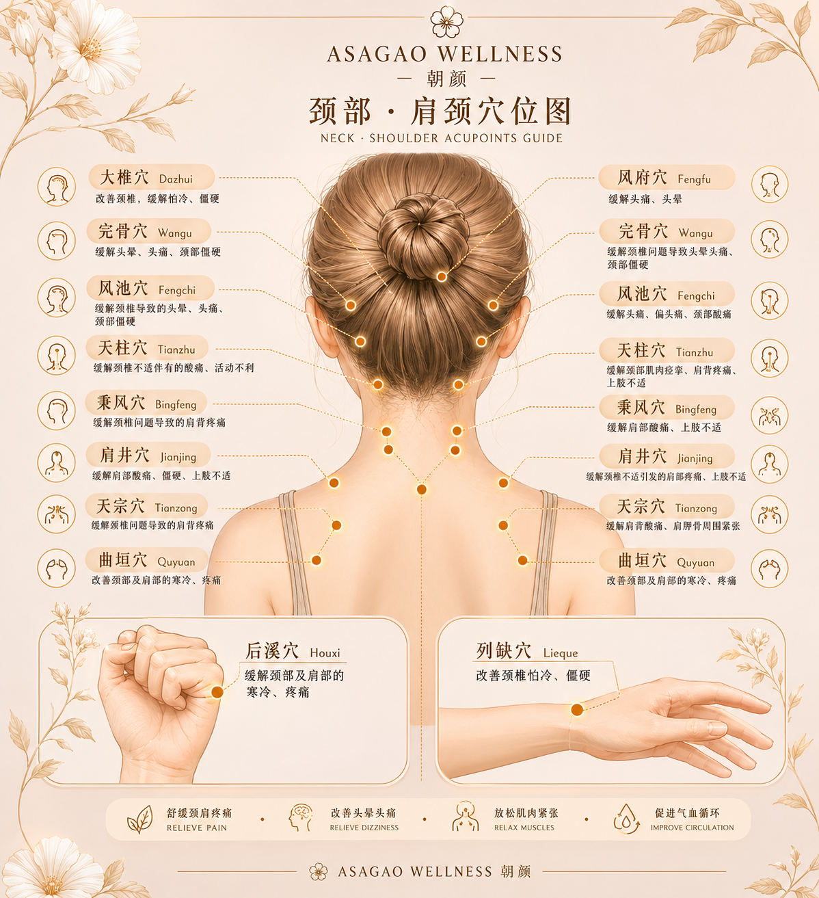
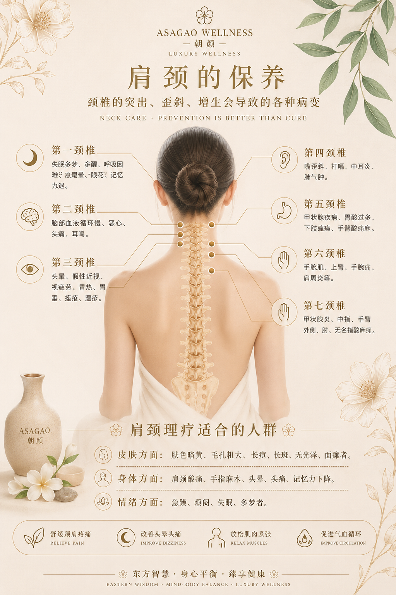
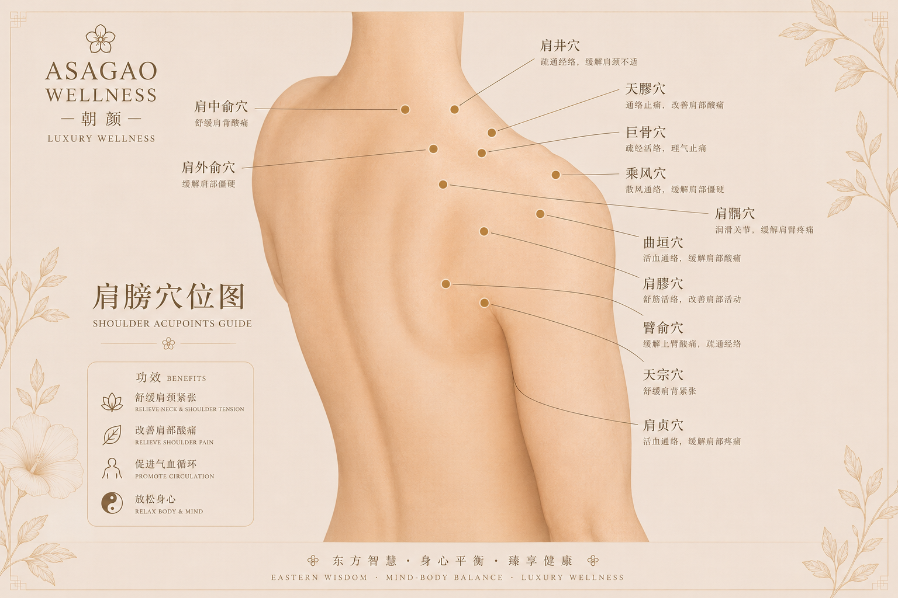

A focused release ritual designed to ease accumulated tension around the neck, shoulders, upper back, and cervical region through slow therapeutic touch and grounding bodywork.
Inspired by Eastern healing philosophy and quiet luxury wellness, the Neck & Shoulder Release Ritual supports posture awareness, nervous system regulation, circulation, breathing rhythm, and deep muscular softening for modern stress and screen-related tension.

Cervical meridian care · Shoulder release · Nervous system relaxation

ASAGAO WELLNESS · Quiet luxury therapeutic bodywork

Neck · Shoulders · Postural balance · Deep restorative calm